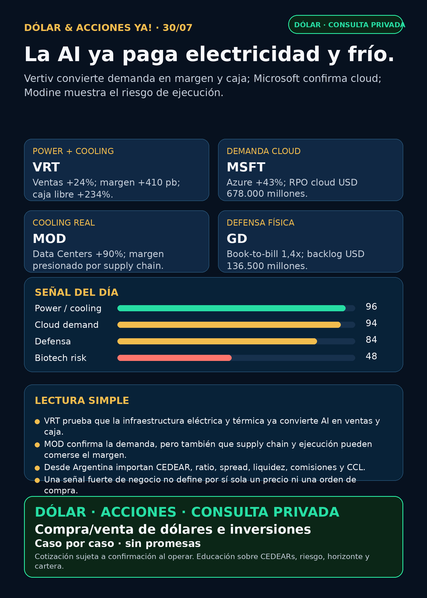

La AI ya paga electricidad y frío.
Vertiv, Microsoft, Modine y General Dynamics: AI física, cloud demand y defensa con números.
Texto WhatsApp
Placa del día

Dólar & Acciones YA — Stock Radar — 30/07
Fecha de edición: 2026-07-30. Research educativo para Argentina y carteras globales. No es recomendación personalizada de compra ni de venta.
Lectura simple del día
La señal más clara es que la demanda de inteligencia artificial ya está bajando a la economía física. Vertiv (VRT) vendió más equipos y servicios para energía y refrigeración de data centers, mejoró margen y convirtió esa expansión en caja. Modine (MOD) mostró Data Centers +90%, pero también dejó una advertencia: vender mucho no alcanza si la supply chain y la rampa productiva se comen el margen.
Del otro lado aparece la demanda final. Microsoft (MSFT) reportó Azure +43% y contratos pendientes de cloud por USD 678.000 millones. En criollo: si los clientes siguen contratando capacidad cloud, la cadena no termina en las GPUs; incluye memoria, networking, electricidad, interconexión y cooling.
Esto está ordenado por valor educativo y calidad de señal, no como ranking de compra. Buena empresa ≠ buena inversión al precio actual ≠ buen instrumento para Argentina ≠ tamaño correcto dentro de una cartera.
Capa Argentina: dólar, MEP/CCL y CEDEARs
Datos públicos tomados a las 08:46 ART:
- BlueLytics: dólar oficial vendedor ARS 1.519,00 y blue vendedor ARS 1.570,00; actualización 30/07 08:45 ART.
- CriptoYa: USDT ask ARS 1.593,00; actualización 30/07 08:45 ART.
- MEP AL30 24hs ARS 1.515,40 y CCL AL30 24hs ARS 1.591,85; ambos tienen timestamp de cierre del 29/07 16:59 ART. No son cotización intradiaria del broker.
En criollo: el MEP permite pasar de pesos a dólares mediante bonos dentro de Argentina. El CCL conecta precios locales con el exterior y suele impactar en los CEDEARs. Un CEDEAR representa una fracción de una acción extranjera, pero tiene ratio, spread —la diferencia entre mejor comprador y vendedor—, liquidez, comisiones y CCL implícito. Para mover plata real se confirma el book en IOL/PPI o broker vivo.
VRT, MOD, GD, VKTX, RVII y varios fabricantes coreanos son accionables globalmente o potencialmente globales. La existencia, ratio y liquidez de instrumentos locales no fueron revalidados en esta corrida; sin instrumento claro quedan como radar educativo/global, no como ejecución Argentina.
Tesis central
La AI ya paga electricidad y frío. VRT confirma crecimiento, margen y caja en infraestructura crítica. MOD confirma demanda extraordinaria, pero también riesgo de ejecución. MSFT valida la demanda final y META muestra la otra cara: capex enorme puede presionar margen y flujo de caja.
La tesis completa no es “comprar todo lo que diga data center”. Hay que separar generación, transmisión, subestaciones, transformadores, power management, cooling, interconexión y construcción. Cada capa tiene economía, valuación y riesgo distintos.
Señales educativas del día
1. Power y cooling para data centers — Vertiv (VRT)
- Qué pasó: Q2 2026 net sales USD 3.274 millones, +24% interanual y +18% orgánico. El margen operativo ajustado llegó a 22,6%, 410 puntos básicos más. El flujo operativo fue USD 1.100 millones (+241%) y el flujo de caja libre ajustado USD 925 millones (+234%).
- Guía: midpoint de ventas FY2026 en USD 14.000 millones, crecimiento orgánico de 31% y EPS ajustado de USD 6,65–6,75.
- Fuente primaria (29/07): SEC Exhibit 99.1: https://www.sec.gov/Archives/edgar/data/1674101/000162828026050323/q22026exhibit991vrt07292026.htm
- Lectura en criollo: energía, gestión térmica e infraestructura crítica ya monetizan la expansión AI.
- Riesgo: congestión temporal de supply chain, proyectos más grandes, capex y valuación. Un gran trimestre no define por sí solo un precio de entrada.
- Accionable internacional/global: acción USA
VRT; faltan precio y valuación frescos para análisis humano. - Accionable local Argentina: CEDEAR, ratio, volumen y spread no revalidados. Estado local: no accionable por ahora.
- Estado: señal fortalecida.
2. Demanda hyperscaler — Microsoft (MSFT)
- Qué pasó: Q4 FY2026 revenue USD 90.000 millones (+18%), operating income USD 40.600 millones (+18%) y EPS diluido USD 4,81 (+32%). Microsoft Cloud generó USD 59.300 millones (+27%); Azure y otros servicios cloud crecieron 43%.
- Contratos pendientes: commercial RPO USD 678.000 millones, +84%. Azure superó USD 100.000 millones de revenue anual por primera vez.
- Fuente primaria (29/07): SEC Exhibit 99.1: https://www.sec.gov/Archives/edgar/data/789019/000119312526323632/msft-ex99_1.htm
- Lectura en criollo: RPO es trabajo contratado todavía no reconocido como ingreso. Ese volumen sostiene el gasto en compute y la infraestructura física asociada.
- Riesgo: compromisos de inversión enormes, competencia y retorno sobre capex que debe probarse ciclo a ciclo.
- Accionabilidad: acción/CEDEAR según disponibilidad de broker; ratio, spread y precio no revalidados hoy.
- Estado: fortalece tesis AI infra/hyperscaler.
3. Cooling con advertencia operativa — Modine (MOD)
- Qué pasó: FQ1 FY2027 net sales USD 874,1 millones (+28%), net earnings USD 74,3 millones (+44%) y EPS ajustado USD 1,53 (+44%). Data Centers creció 90%.
- Qué salió mal: gross margin bajó 340 puntos básicos a 20,8%. La empresa citó supply-chain constraints, costos de materiales e ineficiencias temporales de producción; adjusted EBITDA creció sólo 5%.
- Fuente primaria (29/07): SEC Exhibit 99.1: https://www.sec.gov/Archives/edgar/data/67347/000110465926088230/mod-20260729xex99d1.htm
- Lectura en criollo: la demanda existe, pero capturarla con margen requiere componentes, capacidad y ejecución.
- Accionabilidad: acción USA; acceso Argentina/CEDEAR no verificado.
- Estado: demanda fortalecida / vigilar margen y ejecución.
4. Defensa y aerospace industrial — General Dynamics (GD)
- Qué pasó: Q2 revenue USD 14.094 millones (+8,1%), operating earnings USD 1.460 millones (+11,9%), EPS USD 4,24 (+13,4%) y flujo operativo USD 1.900 millones. Orders USD 20.000 millones, book-to-bill 1,4x y backlog USD 136.500 millones.
- Fuente primaria: SEC Exhibit 99.1: https://www.sec.gov/Archives/edgar/data/40533/000004053326000029/gd-20260705exhibit991.htm
- Lectura en criollo: book-to-bill 1,4x significa que entraron USD 1,40 de pedidos por cada USD 1 facturado. Es defensa real medida en barcos, sistemas de combate, municiones y aerospace industrial.
- Riesgo: programas largos, presupuesto público, supply chain, ejecución de backlog y valuación.
- Accionabilidad: USA/global; instrumento local no revalidado.
- Estado: fortalece tesis defensa industrial.
5. Fintech y distribución — Robinhood (HOOD)
- Qué pasó: Q2 revenue récord USD 1.310 millones (+32%), net income USD 573 millones (+48%), depósitos netos USD 22.000 millones y 4,8 millones de suscriptores Gold. Event contracts generaron USD 156 millones, más de 10 veces el año anterior; crypto revenue cayó 38%.
- Fuente primaria (29/07): SEC Exhibit 99.1: https://www.sec.gov/Archives/edgar/data/1783879/000178387926000113/q22026robinhoodexhibit991.htm
- Lectura en criollo: la plataforma diversifica ingresos, pero prediction markets y crypto cambian el perfil regulatorio y cíclico del negocio.
- Riesgo: regulación, calidad del mix de ingresos y dependencia del apetito especulativo.
- Estado: negocio fortalecido / vigilar mix y riesgo.
6. GLP-1/biotech de alto riesgo — Viking Therapeutics (VKTX)
- Qué pasó: los Phase 3 VANQUISH-1/2 de VK2735 subcutáneo quedaron totalmente enrolados. Phase 3 oral se espera en Q4 2026 y datos de mantenimiento en Q3.
- Caja y burn: caja USD 502 millones, sin revenue; R&D trimestral USD 115,8 millones y net loss USD 128,0 millones.
- Fuente primaria (29/07): SEC Exhibit 99.1: https://www.sec.gov/Archives/edgar/data/1607678/000119312526323652/vktx-ex99_1.htm
- Lectura en criollo: enrolar Phase 3 es avance clínico, no aprobación, cobertura, precio ni ventas. El burn abre riesgo de financiación/dilución.
- Estado: vigilar catalizadores / biotech de alto riesgo.
Watchlist priorizada de hoy
Ordenada por valor educativo/señal, no como ranking de compra.
- RKLB: sin filing nuevo posterior al contrato Space Force de USD 266 millones ya indexado. Space/defensa sigue fortalecida, sin recibo fresco superior.
- NVDA: sólo apareció fecha de próximo earnings; moat en sistemas AI y networking vigente, sin señal operativa nueva.
- PLTR: sin contrato o revenue primario nuevo. Ownership/Form 4 no reemplaza ejecución operativa; valuación sigue como riesgo.
- TSM: sin 6-K nuevo superior. Foundry avanzada conserva moat estructural.
- MU: continúa como ruido táctico la venta del CEO bajo plan 10b5-1 ya cuantificada; no rompe por sí sola la tesis HBM/memory.
- GOOGL/GOOG: sin filing nuevo. Los resultados de Microsoft y Meta fortalecen la demanda sectorial, no se atribuyen a Alphabet.
- AAPL: sin primary nuevo; expectativa AI no equivale a moat probado.
- HOOD: resultado récord y event contracts >10x; señal fortalecida con más riesgo regulatorio/mix.
- TSLA: robotaxi/autonomy dejó titulares secundarios, sin filing o regulador nuevo usable. Revisado sin señal fuerte.
- ASML: EUV/High-NA mantiene moat; sin primary nuevo. ASML sí / all-in no.
- Gold /
GLD/GOLD/B: instrumento todavía ambiguo. Metal, ETF, minera y tickerBno son equivalentes; no se publica precio sin definición. - RVI: sigue vigente la sponsor sale del 24/07: 21.827 shares, aproximadamente USD 584.884 y VWAP USD 26,79. Faltan NAV, premium/descuento, holdings, volumen y spread.
- SNDK / CBRS / AVGO: sin filing nuevo superior. Storage, wafer-scale compute y custom silicon/networking conservan tesis estructural.
Energía, grid y power hardware
Generación, storage y campus integrados
NEE+ Brookfield (BAM) — Paducah: Reuters vía BNN reportó un plan de USD 100.000 millones para un campus AI con más de 1,2 GW de compute, hasta 2 GW de gas y 2,6 GW de battery storage. El inicio se proyecta para 2028 y el desarrollo completo para 2032.- Fuente secundaria verificada: https://www.bnnbloomberg.ca/business/artificial-intelligence/2026/07/29/nextera-brookfield-plan-us100-billion-data-centre-at-us-uranium-site-in-kentucky/
- Caveat: sujeto a documentación definitiva; falta comunicado primario de compañía/DOE. Estado: vigilar / auditar primaria, no obra cerrada.
- Lectura: el campus AI empieza a integrar compute, generación, storage, transmisión y protecciones para usuarios de la red.
Cooling e interconexión
VRT: señal operativa de mayor calidad por crecimiento, margen, caja y guía.MOD: Data Centers +90%, con warning de margen/supply chain.EQIX: Q2 revenue USD 2.625 millones (+16%), bookings anualizados +23% y 9.700 interconexiones netas récord. Fuente primaria: https://www.sec.gov/Archives/edgar/data/1101239/000110123926000145/a991eqix-q226xpr.htm
Transformadores y equipamiento eléctrico
- HD Hyundai Electric (
267260.KS): The Elec reportó revenue Q2 +26%, operating profit +37,3%, orders USD 1.440 millones (+44,6%) y backlog USD 8.490 millones (+29,6%). Management vinculó data centers con pedidos de distribution equipment y rotating machinery. - Fuente secundaria verificada: https://www.thelec.net/news/articleView.html?idxno=12602
- Caveat: falta IR/KRX primario. Corea exige broker, moneda, custodia, liquidez y spread; acceso Argentina pendiente.
- Carril completo revisado: Hitachi Energy/Hitachi (
6501.T/HTHIY), Siemens Energy (ENR.DE, no Siemens AG), GE Vernova (GEV), HD Hyundai Electric, Hyosung/HICO (298040.KS), Virginia Transformer y Delta Star. Sin primary fresco superior para el resto; Virginia Transformer y Delta Star siguen privadas/no accionables directas.
Energía Argentina
YPF,PAMP,TGS/TGSU2,CEPUyVISTfueron revisadas. Los proyectos RIGI/Vaca Muerta ya indexados siguen estructurales, pero no apareció señal primaria nueva fuerte en 24–72 horas.- Antes de una ejecución futura: verificar acción local, ADR/CEDEAR, CCL, volumen, spread, comisiones y precio de broker vivo.
Nuclear y uranio
CCJ,CEG,VSTy uranio revisados sin primary fresco superior. Paducah usa un ex sitio de enriquecimiento por su infraestructura, pero el plan anunciado es gas + battery storage: no venderlo como proyecto nuclear.
Pharma / salud
VKTX: avance Phase 3 real, sin revenue y con burn alto; no es aprobación.AZNpositivo: Sonesitatug vedotin mostró mejora significativa en overall survival para cáncer gástrico/GEJ CLDN18.2+. Fuente primaria: https://www.sec.gov/Archives/edgar/data/901832/000165495426006895/a9459n.htmAZNnegativo: Ultomiris Phase 3 en HSCT-TMA adulto/adolescente no alcanzó significancia estadística. Fuente primaria: https://www.sec.gov/Archives/edgar/data/901832/000165495426006897/a8707n.htmCAPR: la compañía sostiene que HOPE-3 alcanzó su endpoint y que la BLA sigue activa con PDUFA 22/08, mientras medios sectoriales reportaron un voto adverso del advisory committee. Sin acta/voto FDA primario recuperado: conflicto / no accionable / auditoría pendiente. Company SEC: https://www.sec.gov/Archives/edgar/data/1133869/000110465926087891/capr-20260729xex99d1.htmLLY/NVO: revisadas sin catalyst FDA/EMA/company primario nuevo superior. No confundir headline, advisory vote o avance de trial con aprobación.
Radar amplio fuera de watchlist
META: Q2 revenue USD 60.801 millones (+28%), pero costs/expenses +55%, operating margin 31% vs 43% y FCF trimestral USD 784 millones después de capex USD 31.080 millones. Capex FY2026 esperado: USD 130.000–145.000 millones. Fortalece demanda infra; vigilar retorno y margen. Fuente: https://www.sec.gov/Archives/edgar/data/1326801/000162828026050596/meta-06302026xexhibit991.htmQCOM: revenue FQ3 USD 9.947 millones (-4%); handsets -20%, automotive +61% e IoT +9%. Proyecta crecimiento non-handset, incluido Data Center, superior a 60% en FY2027. Diversificación fuerte, core handset débil. Fuente: https://www.sec.gov/Archives/edgar/data/804328/000080432826000085/qcom062826erex991.htm- Defensa visible:
GDes la señal fresca fuerte.AVAV, GE Aerospace (GE),RTX,LMT,NOC,HWM,KTOS,BA,ITA/XARfueron revisados sin señal primaria nueva superior. La tesis estructural de backlog, aftermarket y municiones sigue. - Space/orbital AI:
SPCX/SpaceX, Starlink, Starship,RKLB, sat-to-mobile y orbital compute revisados. Sin filing material nuevo; no usarRVI/DXYZcomo proxy automático sin peso real, NAV y premium. - Autonomous mobility/physical AI: Tesla, Waymo/Alphabet, Uber, Zoox/Amazon y Joby revisados; sin evento company/regulatorio nuevo suficiente.
- Fintech/AI agents:
HOODdestaca por resultados y event markets. Los agentes de trading siguen siendo educación con datos correctos, ledger, paper mode, aprobación humana y límites; no promesa de rentabilidad. - Crypto gobernado: sin input on-chain nuevo fuerte. Se mantiene separado como educación, infraestructura y proxies regulados; no token trade.
Private markets e instrumentos empaquetados
RVII: registro pre-IPO/no efectivo; roadshow previsto para 03/08. Portfolio al 31/03: SAFEs de startups tempranas ligadas a YC, NAV USD 24,14 por share, investments USD 8,85 millones y fee 2% + 20% de realized gains. No es SpaceX/OpenAI/Anthropic. Fuente SEC: https://www.sec.gov/Archives/edgar/data/2131040/000162828026049234/rvii-nx2a1july2026.htm- Estado
RVII: radar educativo / no accionable hasta efectividad, precio, listing, holdings, volumen y acceso. RVI: fondo cerrado USA con ventas recientes del sponsor. No accionable con datos actuales sin NAV/premium/holdings/float/liquidez.DXYZ,ARKVX,AGIX,XOVR,VCX, Forge: revisados sin fact sheet/filing/holdings nuevo suficiente. Audit-only.- Argentina vs global: estos vehículos son primariamente USA/global y pueden requerir cuenta exterior. Importan custodia, fiscalidad/compliance, moneda, liquidez y spread; no se asume CEDEAR.
Red flags / hype para ignorar
- “AI = sólo GPU”: incompleto. También importan red, distribución, cooling, permisos, generación y financiación.
- “Data Centers +90% = margen asegurado”: falso.
MODmostró crecimiento extraordinario con presión operativa. - “Capex enorme = retorno asegurado”: falso.
METAmuestra que inversión y flujo de caja pueden moverse en direcciones opuestas. - “Phase 3 enrolado = fármaco aprobado”: falso.
VKTXtodavía enfrenta riesgo clínico, regulatorio y financiero. - “RVII = acceso a SpaceX/OpenAI”: falso según el portfolio verificado.
- “Gold / GLD / GOLD / B son lo mismo”: falso. El instrumento exacto sigue bloqueado.
Qué mirar después
VRT: backlog, capacidad, supply chain, margen, caja y valuación.MOD: recuperación del gross margin y normalización productiva.MSFT/META: capex, finance leases, RPO y retorno de infraestructura AI.NEE/Brookfield Paducah: comunicado primario, ownership, funding, permisos, off-take y protección al usuario de red.VKTX: datos de mantenimiento Q3, Phase 3 oral Q4, burn/runway y potencial dilución.CAPR: documentos y tally oficiales FDA antes de cualquier conclusión.- Argentina: MEP/CCL intradiario, CEDEAR disponible, ratio, book, spread y comisiones si una tesis pasa a análisis humano.
Portfolio/base Mi Simulación
La cartera de Ricardo fue liquidada, devuelta y terminada según estado vigente del 24/06. No hay posiciones activas ni P&L real que reportar. Stock Radar queda como vigilancia para una próxima compra o un nuevo inversor.
Recibo visible de cobertura
Revisado: watchlist base, AI infra/semis, energéticas argentinas, transformadores/power hardware, cooling, pharma/GLP-1/oncology, defensa/aeroespacial, space/private wrappers, autonomía/physical AI, fintech/AI agents, crypto gobernado y mercado amplio. Los carriles sin señal primaria nueva fuerte quedaron marcados, no omitidos.
Servicio privado
Dólar · Acciones · Consulta privada. Si querés comprar o vender dólares, entender CEDEARs, armar una cartera o revisar riesgo, se ve por privado caso por caso. Cotización sujeta a confirmación al momento de operar.
Disclaimer
Esto es research educativo para decisión humana. No es asesoramiento financiero personalizado ni instrucción de compra/venta.